| 日付 | 2024年5月2日（木） - 2024年5月3日（金） | ||||||
|---|---|---|---|---|---|---|---|
| 山域 | 日光周辺、尾瀬 | ||||||
| メンバー | 単独 | ||||||
| 山行形態 | 1泊2日車中泊 | ||||||
| アクセス | 車 | ||||||
| ルート (Map2) |
|
2日目
本日は4時半起床。チケット売り場は5時に開くようで、4:45から並び始める。
5時過ぎにチケットを購入し、準備をしたらすぐにバスの列に並ぶ。
朝からあわただしい。もう30分早く起きればよかった。
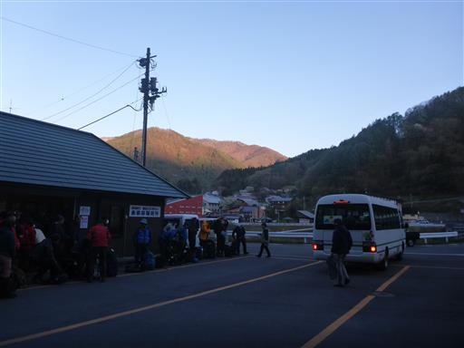
バスは次々に出る。第2便のバスに乗って鳩待峠に移動。
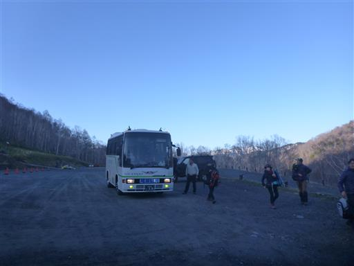
17年振りの鳩待峠。尾瀬の標識も当時と少し変わっている。
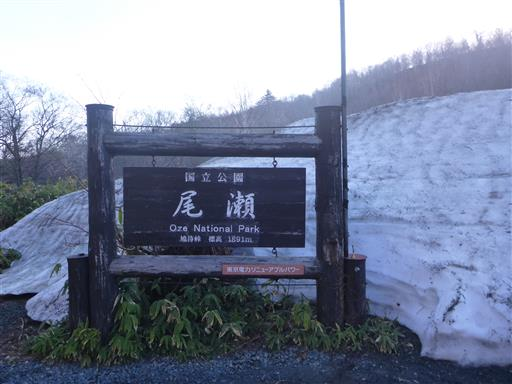
朝食をとって準備を整えて出発。標高1590m。
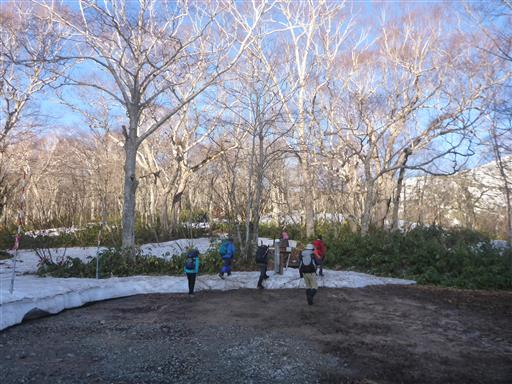
登山者の数は多く、列をなして登っていく。
少しずつばらけていくことを期待。
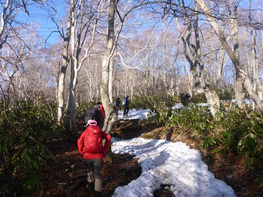
登り始めてすぐに完全な雪道になる。
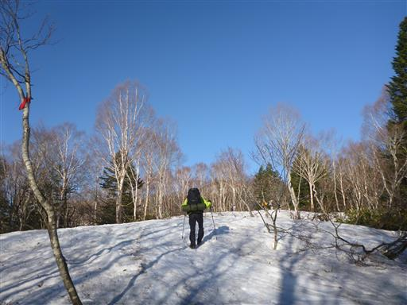
ところどころで穴があるのが恐ろしい。
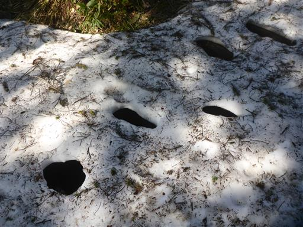
途中で至仏山の雄姿が見える。
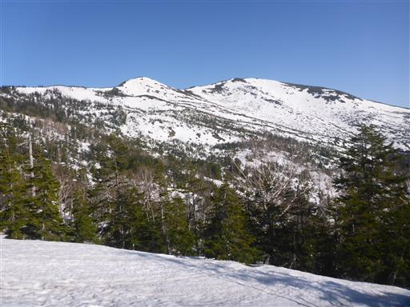
右手には尾瀬ヶ原。まだ朝靄がかかっている。
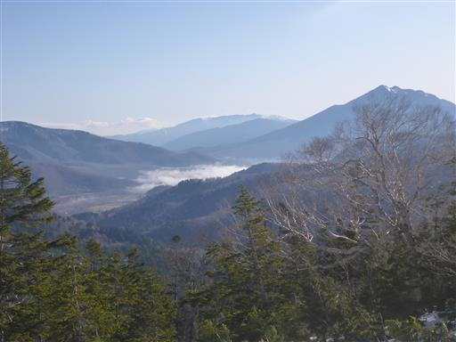
樹林帯の中を歩く。だいぶ人がばらけてきた。
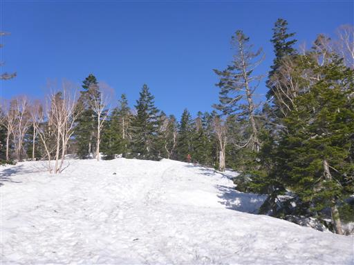
傾斜は緩やかで歩きやすい。本日は雲一つない快晴だ。
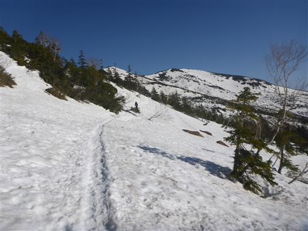
振り返ると日光の山々を見渡せる。真ん中が日光白根山だ。
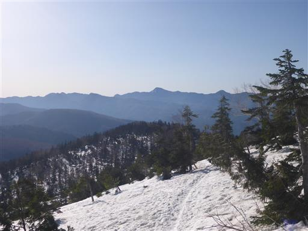
シリセードか何かで滑った跡がある。
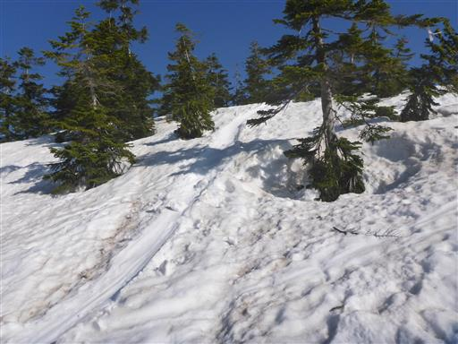
広大な雪原に出てくる。
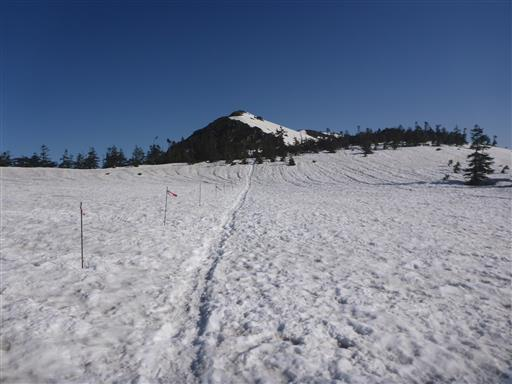
少し木道が顔を出している。
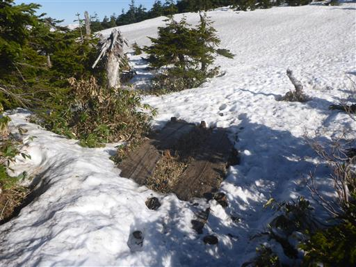
目の前のピークは小至仏山。
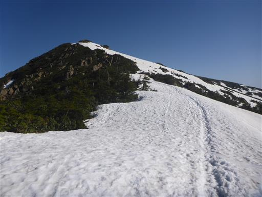
どこを見渡しても絶景だ。
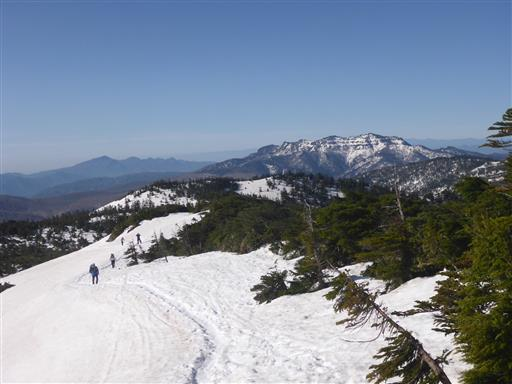
夏道を発見。この辺りに小至仏山への登山道がないか探ってみたが見当たらなかった。
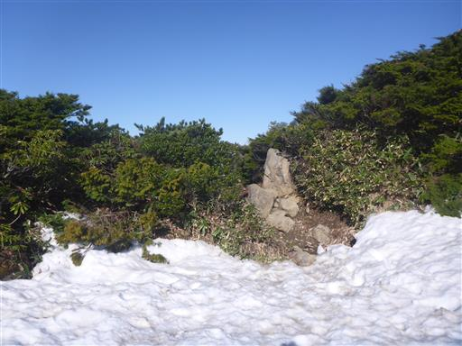
冬の間は小至仏山へは登らずにトラバース道を歩くのがメイン。
小至仏山にも寄り道したかったが、大人しくルートに沿って歩く。
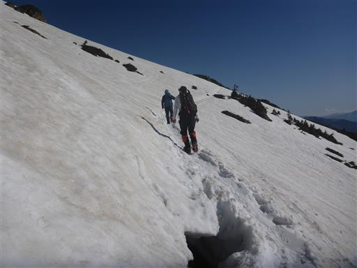
至仏山への最後の登り。
ちょっと傾斜が急なところもあり、アイゼン等があった方が良い場所もある。
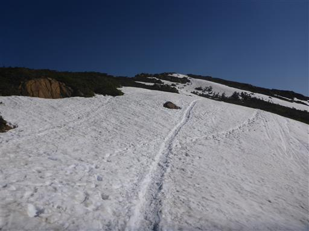
山頂手前で山の西側に出てきて、雪がなくなる。
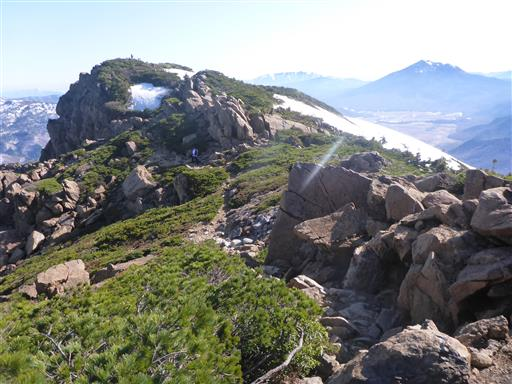
滑りやすい蛇紋岩地帯を通過。
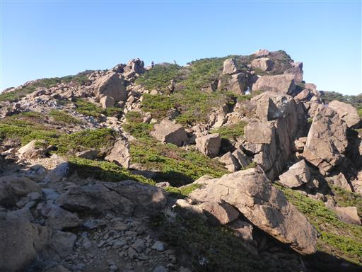
至仏山山頂に到着。標高2228m。
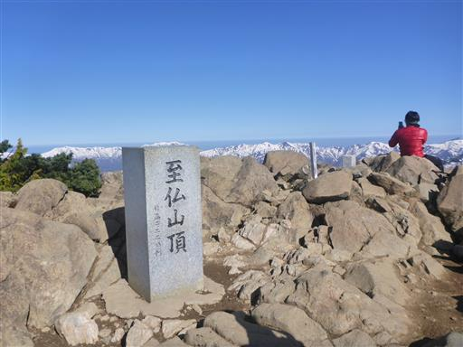
山頂からは360度の大展望が広がる。
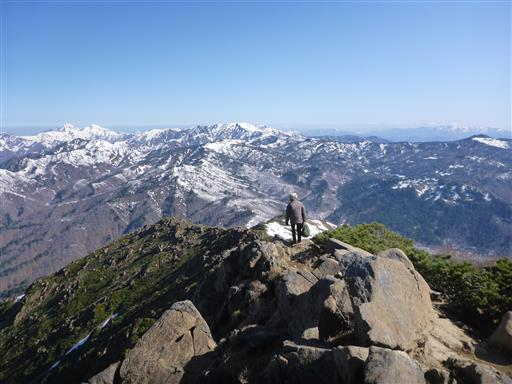
まず目に飛び込んでくるのが尾瀬ヶ原とその背後にそびえる燧ヶ岳。
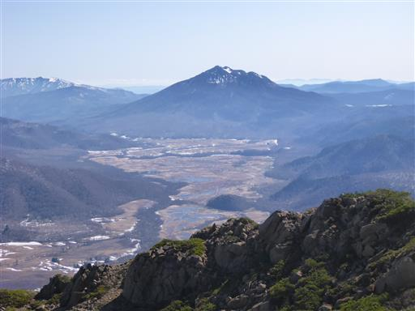
こちらはかつて同じ残雪期に歩いた会津駒ヶ岳。
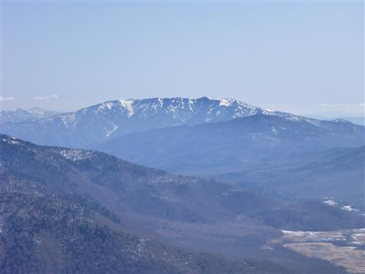
平ヶ岳。今回行く山の候補として平ヶ岳も考えたが、
この山は雪のない時期に登りたくてスキップした。
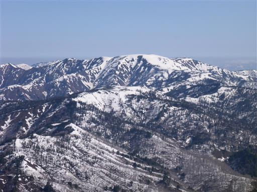
越後三山。その背後に見える横線は水平線だろうか？
とすれば見えているのは日本海？
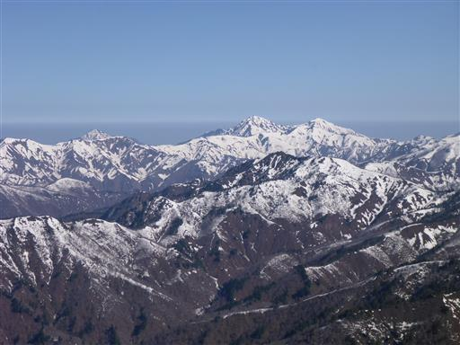
遠く妙高山、火打山。その左手に見えるのは北アルプスの辺りだろう。
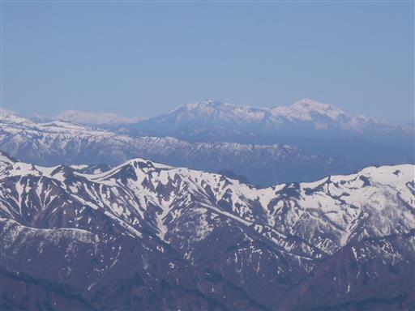
真ん中にある谷川岳は雪が少なく、あまり目立たない。
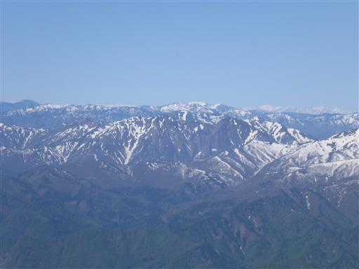
浅間山。もう雪はないように見える。
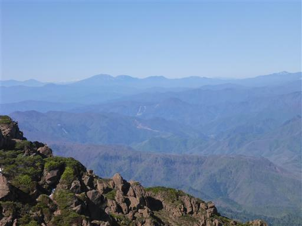
上州武尊山。至仏山のすぐ近くにそびえている。
その奥に富士山が見えている。
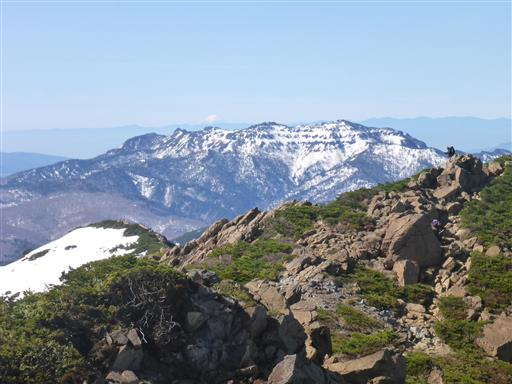
赤城山。
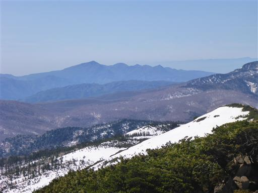
日光方面。あまり目立った山は見えないが、日光白根山と皇海山が見えている。
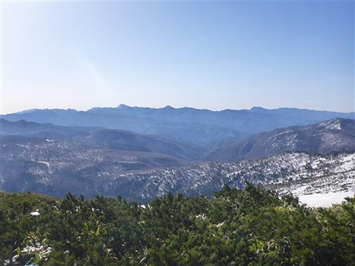
展望を満喫しながら山頂でおにぎりを1個食べる。
登山者は次々にやってくるが、それほど混雑はしていない。
30分ほど滞在したら、名残惜しいが下山する。
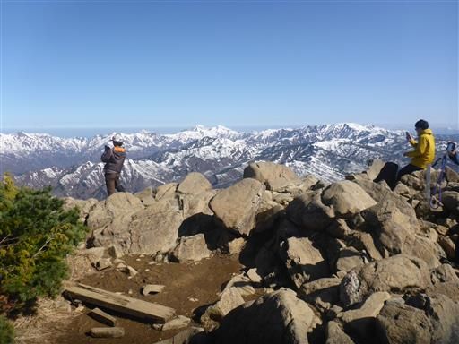
下山道はこれまた展望の良い道。尾瀬ヶ原に向かって木の階段を降っていく。
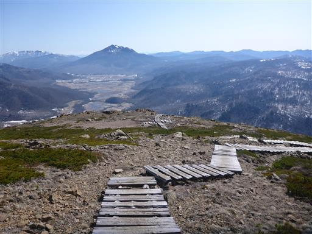
雪はある場所とない場所があるが、夏道が多く出ている。
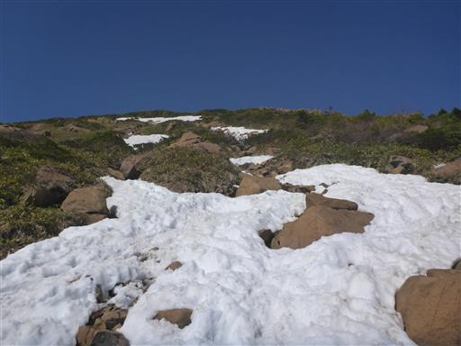
中腹はほとんどが雪に覆われている。傾斜はそこそこ急。
雪は締まっているので楽々降っていける。
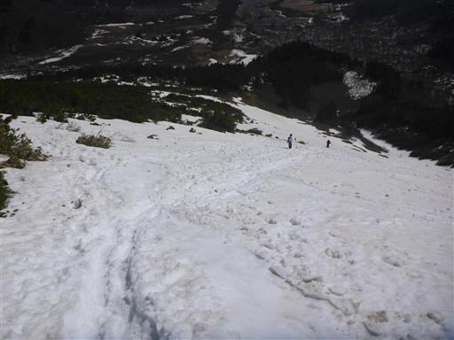
樹林帯の中に入ると日影でこの時間帯は雪が凍っているため滑りやすい。
慎重に歩く。
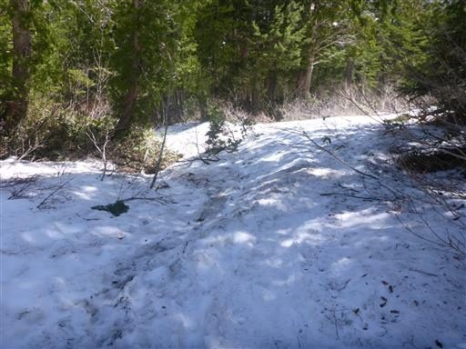
最後は泥んこの夏道。
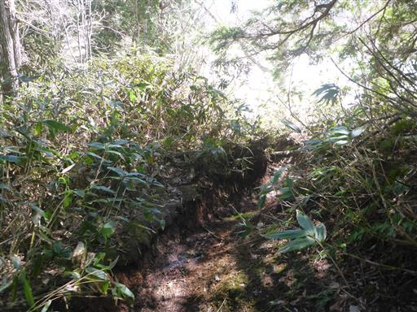
尾瀬ヶ原に出てくる。
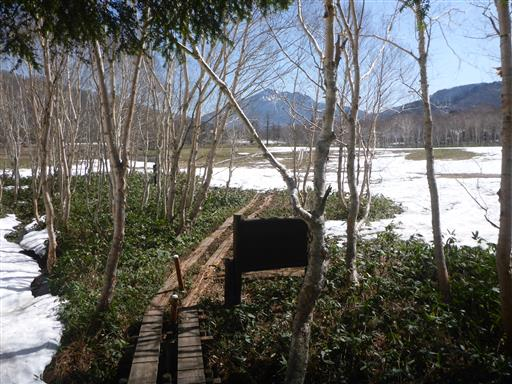
目の前にそびえる燧ヶ岳。人の数は少なくとても静かだ。
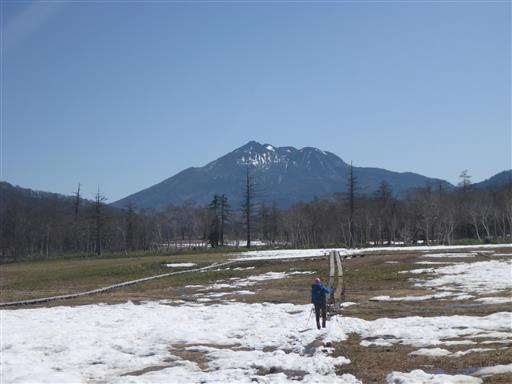
振り返って至仏山。
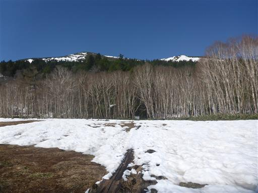
山ノ鼻に到着。ここから鳩待峠まで1時間程度だが、時刻はまだ9時過ぎ。
尾瀬ヶ原を散策することにする。
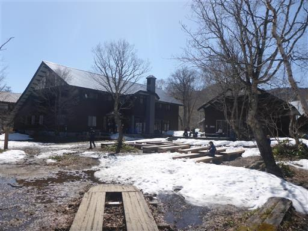
まだ雪が残る初春の尾瀬。小さな小川があちらこちらにある。
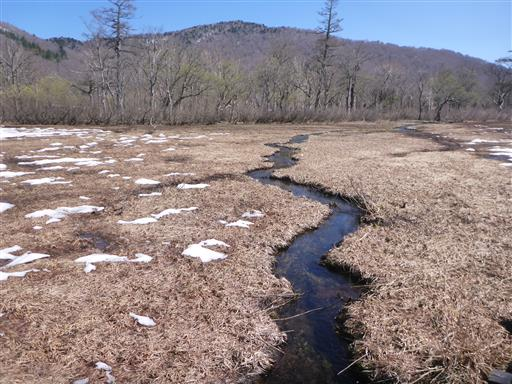
始めて歩く尾瀬ヶ原。これまで山ノ鼻と見晴にはいったことがあり尾瀬ヶ原を眺めたことがあったが、
尾瀬ヶ原の木道を歩くのはこれが初めてだ。
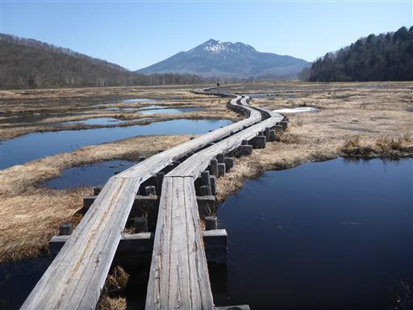
水芭蕉の花を発見。まだ時期は早いが咲き始めている。
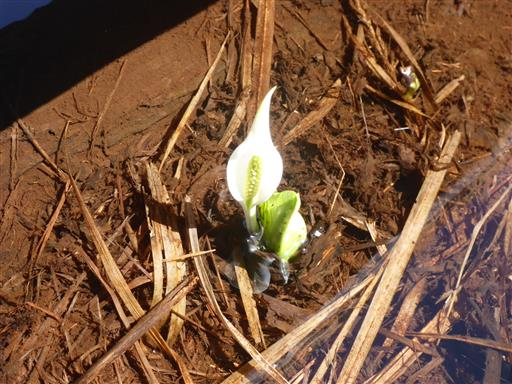
池塘に大きな氷の塊が浮かんでいる。
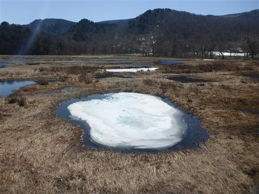
池塘に姿を映す逆さ燧ヶ岳。
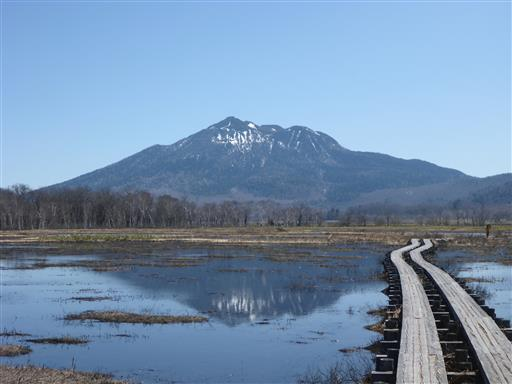
こちらは逆さ至仏山。今日はそこそこ風があり、この後は静かな湖面を拝めなかった。
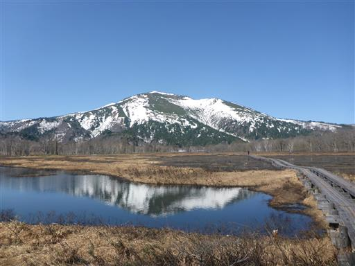
尾瀬を流れる川を橋で何度も渡って進んでいく。
きれいな川。川底までくっきりと見える。
下の大堀川の水芭蕉群生地に立ち寄る。
水芭蕉が群生しているが、まだ時期が早いため花の数は多くない。
僅かな水芭蕉と至仏山。
尾瀬ヶ原から眺める至仏山は最も好きな山の形の一つだ。
燧ヶ岳のような存在感はないのだが、優美なスカイラインを描いている。
竜宮現象の湧出点。湿原の伏流水がここから湧き出しているらしい。
3mくらいの深さはありそうだ。ここで2度目のおにぎり休憩をとる。
木道の下に水芭蕉が咲いている。なぜか木道周辺に水芭蕉が多い。
リュウキンカの花も僅かながら見られる。
川の中に魚を発見。
竜宮小屋に到着。尾瀬ヶ原の真ん中に立つ小屋だ。
この辺りは少し樹林帯が広がっている。
沼尻川に架かる橋。
この橋、明らかに傾いている。崩壊しそうで、渡っていてちょっと怖い。
だいぶ燧ヶ岳が近づいてきた。
見晴に到着。小屋がたくさん立ち並んでいる。
今回、尾瀬ヶ原を端から端まで歩いてみて、尾瀬ヶ原の広さを実感した。
別の道をとって帰りたいが、ヨッピ吊橋がまだ渡れないそうなので、元来た道を戻ることにする。
往路はずっと燧ヶ岳を眺めながら歩いたが、復路は至仏山を眺めながら歩くことになる。
竜宮十字路まで戻ってくる。ここから少し足を延ばしてヨッピ吊橋方面に行ってみることにする。
木道は地面に埋まっていてちょっと古そうだ。
この辺りは少し笹原が広がっている。
ここまでくると至仏山は半分隠れてしまう。
ヨッピ吊橋に到着。板が外されていて渡ることはできない。
まぁ無理やり渡れそうではあるが。
ヨッピ吊橋は渡らずに牛首方面に向かう。
この辺りはほとんど歩いている人がいない。
右手には景鶴山が見える。
いつかは登ってみたい山だが、日帰りでは難しく登れる時期も限られるため、困難な山だ。
木道にはところどころに資材が置かれている。
板が外されている橋に到着。地図の読み間違いで、ここも通れないことを認識できていなかった。
とはいえ板はなくても土台を歩けば普通に渡れる。
牛首に到着。ちょうどお昼時で、多くの登山者で賑わっている。
ここでバスの時間の計算をする。バスは1時間に1本で、13時半のバスまで残り1時間20分。
コースタイムは1時間40分ほどで、急げば間に合いそうだ。
急ぎ足で山ノ鼻に向かう。
山ノ鼻に到着。雪が解けて水たまりだらけだ。
ここはテントを張っている人がいっぱいいる。尾瀬ヶ原でテントOKの場所があるとは知らなかった。
ここから鳩待峠に急ぎ足で向かう。
川上川を渡る。この川の水は尾瀬に注いでいる。
川上川に沿って木道が続いている。
この辺りも少しだけ水芭蕉の花が咲いている。
ところどころ雪に覆われているところもある。
雪があるとスピードが落ちるのが苦しいところだ。
この道は家族連れともよくすれ違う。小さな雪だるまが作られている。
最後の方は登り。短い登りなのでスピードを落とさずに登っていく。
ずっと木道が続いていたが、最後だけ石畳の道になる。
雪解け水で川のようになっている。
13:19に鳩待峠に到着。ある程度余裕をもって間に合った。
チケットを買ってバス停に移動。本日は臨時便が出ないとのこと。
急いでよかった。バスは13:30ちょうどに出発。
戸倉の駐車場に戻ってくる。
本日は絶好の快晴で至仏山山頂からも、尾瀬ヶ原からも最高の展望を満喫できた。